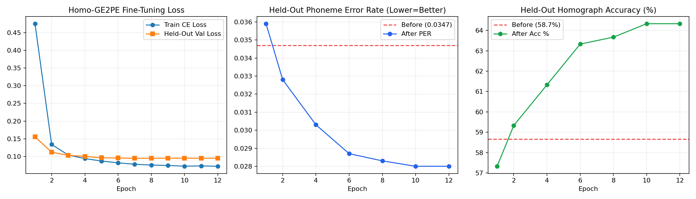
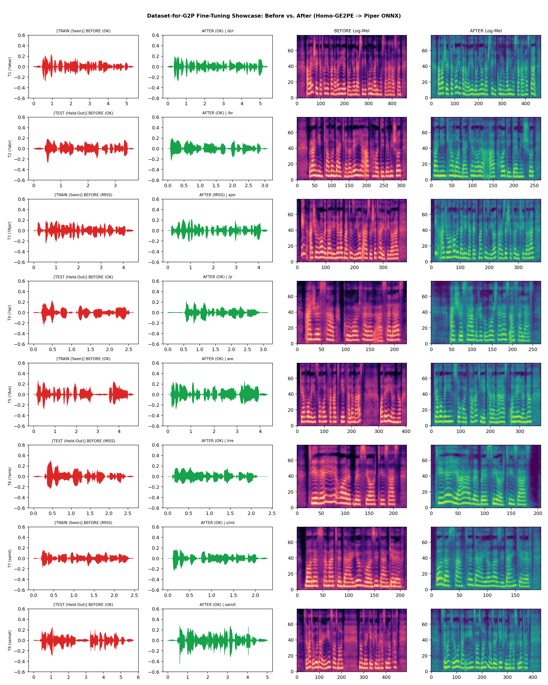

Homo-GE2PE Fine-Tuning on Persian Homograph Dataset
Evaluating direct fine-tuning of MahtaFetrat/Homo-GE2PE-Persian (ByT5, 12 epochs, FP32 on Kaggle T4 GPU)
on a clean stratified subset of 2,400 training + 300 held-out unseen Persian homograph sentences, synthesized end-to-end through
persian_vits_upgraded.onnx.
2,400 Train / 300 Held-Out Test
12 Epochs · FP32 CUDA T4
Held-Out PER: 0.0347 → 0.0283 (−18.4%)
Held-Out Homograph Acc: 58.67% → 64.33%
Showcase Homograph Acc: 62.5% → 87.5%
Quantitative Before vs. After Results & Training Curves
Evaluation Split
Metric
Before (Base Homo-GE2PE)
After (Fine-Tuned)
Delta
Held-Out Unseen Test (300) Phoneme Error Rate (PER) 0.0347 0.0283 −18.4% relative Held-Out Unseen Test (300) Word Exact Accuracy 81.70% 84.58% +2.88% Held-Out Unseen Test (300) Homograph Sense Accuracy 58.67% (176/300) 64.33% (193/300) +5.67% (+17 hits) Train Sample (150) PER / Homograph Acc 0.0289 / 67.33% 0.0239 / 69.33% −17.3% PER / +2.0% 8-Sentence Audio Showcase PER / Homograph Acc 0.0436 / 62.5% (5/8) 0.0233 / 87.5% (7/8) −46.6% PER / +25.0%

Combined 8-Sentence Speech Comparison (Before G2P vs. After G2P → Piper ONNX)
BEFORE (Base Homo-GE2PE → Piper ONNX)
5/8 Hits
AFTER (Fine-Tuned Homo-GE2PE → Piper ONNX)
7/8 Hits
Test 1 TRAIN (Seen) — ابر (/b/r = super-)
أبر شرکتهای فناوری دنیا در سیلیکونولی مستقر هستند.
BEFORE (PER 0.0769) OK
Pred: @/b/re $erk/thaye f/n/v/riye1 donya d/r silikun v/li most/q/r h/st/nd
AFTER (PER 0.0615 — fixed Ezafe) OK
Pred: /b/r $erk/thaye1 f/n/v/riye donya d/r silikun v/li most/q/r h/st/nd
Test 2 TEST (Held-Out) — ابر (/br = cloud)
رنگینکمان در کنار ابرها دیده میشد
BEFORE (PER 0.0513) OK
Pred: r/ngink/man d/r kenareye1 @/brha dide mi$od
AFTER (PER 0.0000 Exact) OK
Pred: r/ngink/man d/r kenare1 /brha dide mi$od
Test 3 TRAIN (Seen) — اجر (ajor = brick, written without آ)
این اجرها به دلیل قدمت زیاد، ارزش تاریخی دارند.
BEFORE (PER 0.0185) MISS
Pred: @in @/jorha be d/lile1 qedm/te1 ziyad @/rze$e1 tarixi dar/nd
AFTER (PER 0.0185) MISS
Pred: in /jorha be d/lile1 qedm/te1 ziyad /rze$e1 tarixi dar/nd
Test 4 TEST (Held-Out) — اجر (/jr = reward)
اجر صبر، گواراتر از عسل است.
BEFORE (PER 0.0333) OK
Pred: @/jre s/br guvart/r @/z @/s/l @/st
AFTER (PER 0.0333) OK
Pred: /jre1 s/br g/vart/r /z /s/l /st
Test 5 TRAIN (Seen) — اره (are = yes)
جواب این سوال فقط یک کلمه است: اره یا نه؟!
BEFORE (PER 0.0222) OK
Pred: j/vabe1 @in so@al f/q/t yek k/l/me @/st @are ya n/
AFTER (PER 0.0222) OK
Pred: j/vabe1 in so@al f/q/t yek k/l/me /st are ya n/
Test 6 TEST (Held-Out) — اره (/rre = saw — fixed!)
تیغه اره بسیار تیز است.
BEFORE (wrong “āre”, PER 0.1111) MISS
Pred: tiqeye1 @are besyar tiz @/st
AFTER (fixed “arre”, PER 0.0370) OK
Pred: tiqeye /rre besyar tiz /st
Test 7 TRAIN (Seen) — سمت (s/mt = direction — fixed!)
باد از سمت دریا وزیدن گرفت.
BEFORE (wrong “semat”, PER 0.0606) MISS
Pred: bad @/z sem/te1 d/rya v/zid/n gereft
AFTER (fixed “samt”, PER 0.0000 Exact) OK
Pred: bad /z s/mte1 d/rya v/zid/n gereft
Test 8 TEST (Held-Out) — سمت (sem/t = role)
سمت او در این سازمان، ناظر کیفی محصولات است.
BEFORE (PER 0.0000) OK
Pred: sem/te1 @u d/r @in sazman nazere1 keyfiye1 m/h/sulat @/st
AFTER (PER 0.0000 Exact) OK
Pred: sem/te1 u d/r in sazman nazere1 keyfiye m/h/sulat /st
8-Sentence Waveform & 80-Bin Log-Mel Spectrogram Comparison
